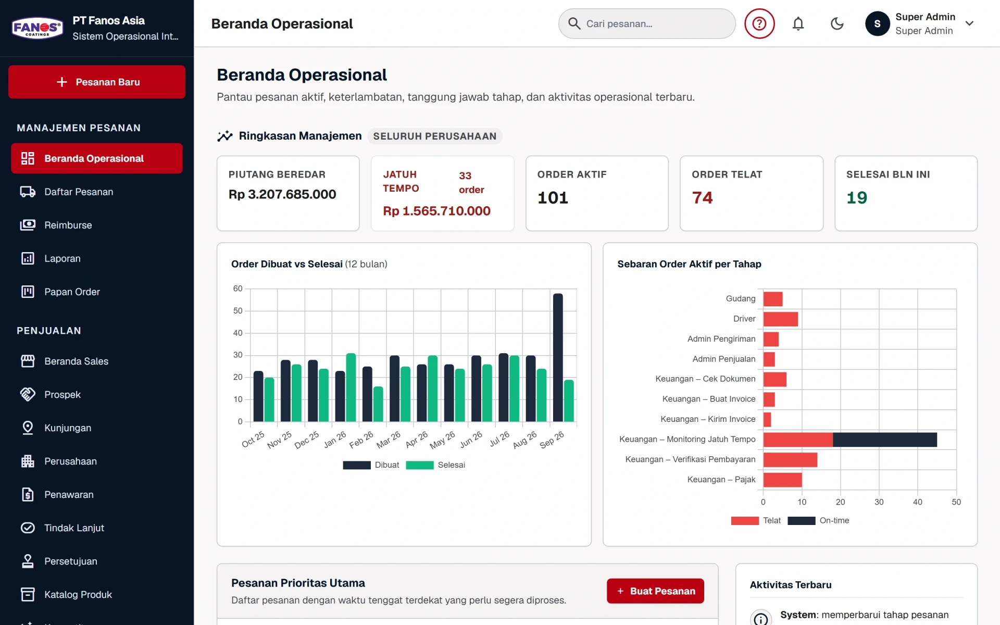

Opsi 1
Kami rawat
Retainer bulanan: hosting, monitoring, backup, dan perubahan kecil.
Ini file websitenya. Tinggal di-upload ya.
Proyek selesai. Vendornya pamit.
Mas, websitenya nggak bisa jalan.
Terkirim ✓Server, domain, SSL, dan monitoring tidak pernah termasuk.
Bukan file. Sistem yang sudah hidup.
No. 0001 · Proyek: situs marketing
Diserahkan dalam keadaan berjalan.
Monitoring menyala sejak hari pertama.
 Live
Live Live
Live
LiveProyek pendiri Renoir, diserahkan dalam keadaan berjalan.
Retainer bulanan: hosting, monitoring, backup, dan perubahan kecil.
Repositori, akses infrastruktur, dan dokumentasi diserahkan penuh.
Ceritakan proyek Anda. Mulai dari obrolan 15 menit.